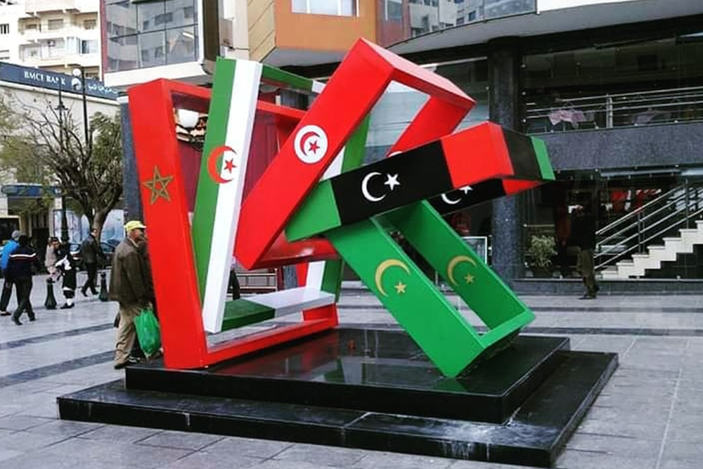

Oujda
Oujda
Oriental Capital

Oujda is the capital city of the Oriental region of northeastern Morocco and has a
population of about 558,000 people. It is located about 15 kilometres (9 miles) west of the
Moroccan-Algerian border in the south of Beni-Znassen mountains and about 55 km (34 miles)
south of the Mediterranean Sea coast.
Reserve